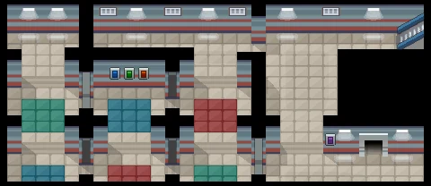
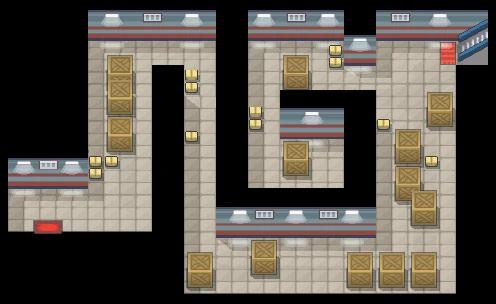
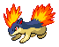
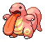
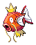
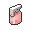

满金广播塔、满金地下通道、44号道路、冰之抜け道
主线
满金市
满金市已经被火箭队占领了。解放广播塔、彻底终结他们阴谋的任务就交给你了！
广播塔


| 训练家 | 宝可梦 | 奖金 |
|---|---|---|
| 火箭队手下 | ₽960 | |
| 火箭队手下 | ₽1040 | |
| 火箭队手下 | ₽920 | |
| 火箭队手下 | ₽1000 | |
| 火箭队手下 | 臭泥 Lv.23 臭泥 Lv.23 | ₽1040 |
| 火箭队手下 | 臭泥 Lv.23 | ₽920 |
| 科学家 Garett | ₽864 | |
| 火箭队手下 | ₽1040 | |
| 火箭队手下 | 臭泥 Lv.22 | ₽880 |
| 科学家 Trenton | 多边兽 Lv.30 | ₽960 |
| 火箭队手下 | ₽960 |
| 道具 | 版本 | 位置 / 获得方法 |
|---|---|---|
| 地下钥匙 | 心金 / 魂银 | 5F，打败拉姆达后由他给予 |
1F
一个火箭队手下挡在去 2F 的楼梯前。他接到命令，只让穿火箭队制服的人通过。
满金地下通道
卧底
去满金地下通道的拍照馆，会找到另一个火箭队手下。他以为你是为广播塔行动新招的成员。制服好像不够了，所以他决定从照相馆「借」一套。转眼间，你就打扮成了一个普通的火箭队手下！
广播塔
1F
因为你的伪装，那个火箭队手下把你当成新成员让开了。就在你要上楼时，劲敌（西尔弗）冲了进来。他冲守卫大吼，要火箭队别再骚扰人。片刻之后他认出了你，批评你居然穿着那身制服。他的话暴露了你是冒牌货，你只好脱下伪装。火箭队手下发现自己上当，立刻和你开战。
被打败后，他冲上楼去通知其他人。西尔弗终于明白你为什么伪装，但说这是弱者的主意。他乐意把火箭队交给你对付，因为他更想找到阿渡并打败他。他警告你下一个要打败的就是你，然后离开了。
2F
二楼有四个火箭队手下在巡逻。打败他们，走到西边的楼梯。
3F
再打败两个火箭队手下和科学家 Garett。东边区域需要钥匙卡才能进，所以先走西边的楼梯。
4F（西侧）
打败第一个火箭队手下和科学家 Trenton，走到通往台长办公室的楼梯。
5F（西侧）
台长被关在自己的办公室里——至少一开始看起来是这样。其实这个人是冒牌货，是拉姆达乔装的。准备战斗！
| 宝可梦 | 详情 |
|---|---|
Lv.30 · 毒 | 特性：飘浮 招式：污泥攻击、烟幕、Selfdestruct、撞击 |
Lv.30 · 毒 | 特性：飘浮 招式：污泥攻击、烟幕、Selfdestruct、撞击 |
Lv.30 · 毒 | 特性：飘浮 招式：污泥攻击、烟幕、Selfdestruct、撞击 |
Lv.30 · 毒 | 特性：飘浮 招式：污泥攻击、烟幕、Selfdestruct、撞击 |
Lv.32 · 毒 | 特性：飘浮 招式：撞击、污泥攻击、烟幕、大爆炸 |
Lv.30 · 毒 | 特性：飘浮 招式：污泥攻击、烟幕、Selfdestruct、撞击 |
战斗结束后，拉姆达透露真正的台长被关在地下仓库里，就在满金地下通道那条小走廊上锁的门后面。他不信你能走到那里，把地下钥匙交给了你。
满金地下


舞女
走进满金地下通道，到那条小走廊里会看到另一位舞女。她说看到火箭队成员到处乱跑，意识到那是因为你在对付他们。她自言自语说你也许能面对某只传说的宝可梦，但又停住了，匆匆离开。
用地下钥匙打开门。走下隔壁房间的楼梯，到达地下仓库。
| 训练家 | 宝可梦 | 奖金 |
|---|---|---|
| 火箭队手下 | ₽1080 | |
| 火箭队手下 | ₽1000 | |
| 火箭队手下 | ₽960 | |
| 小偷 Duncan | ₽2024 | |
| 小偷 Orson | ₽2110 | |
| 火箭队手下 | ₽1000 | |
| 火箭队手下 | ₽960 | |
| 火箭队手下 | 臭泥 Lv.26 | ₽920 |
| 火箭队手下 | ₽1000 |
| 道具 | 版本 | 位置 / 获得方法 |
|---|---|---|
| B2F | ||
| 心金 / 魂银 | 中北部走廊 | |
| 心金 / 魂银 | 西南房间 | |
| 仓库 | ||
| 心金 / 魂银 | 西北区域 | |
| 心金 / 魂银 | 前三个货箱和第四个货箱之间一个单独的箱子上（隐藏道具） | |
| ＰＰ单项全补剂 | 心金 / 魂银 | 东南角 |
| 心金 / 魂银 | 东墙附近，最东边的箱子上（隐藏道具） | |
| 招式学习器82（梦话） | 心金 / 魂银 | 内侧房间，台长旁边 |
| 心金 / 魂银 | 内侧房间，台长给予 | |
B2F
离入口不远处，劲敌（西尔弗）又出现了。他跟着你，希望你能带他找到阿渡。既然一直找不到阿渡，西尔弗决定先打败你。
劲敌对战 4
劲敌（西尔弗）的每只宝可梦比上次都升了 10 级。他的超音蝠进化成了大嘴蝠，从空木研究所偷走的宝可梦也进化到了最终形态。他的队伍新添了一只狃拉，它是冰属性，被格斗属性招式打会受巨大伤害。
| 宝可梦 | 详情 |
|---|---|
Lv.32 · 毒 / 飞行 | 特性：精神力 招式：空气利刃、奇异之光、咬住、惊吓 |
Lv.30 · 电 / 钢 | 特性：磁力 招式：电磁波、电光、超音波、音爆 |
Lv.32 · 幽灵 / 毒 | 特性：飘浮 招式：暗影球、奇异之光、黑色目光、诅咒 |
Lv.34 · 恶 / 冰 | 特性：精神力 招式：Faint Attack、电光一闪、冰冻之风、乱抓 |
 火岩鼠Lv.34 · 火 | 特性：猛火 招式：烟幕、高速星星、电光一闪、火焰轮 |
| 宝可梦 | 详情 |
|---|---|
Lv.30 · 毒 / 飞行 | 特性：精神力 招式：空气利刃、奇异之光、咬住、惊吓 |
Lv.28 · 电 / 钢 | 特性：磁力 招式：电磁波、电光、超音波、音爆 |
Lv.30 · 幽灵 / 毒 | 特性：飘浮 招式：暗影球、奇异之光、黑色目光、诅咒 |
Lv.32 · 恶 / 冰 | 特性：精神力 招式：Faint Attack、电光一闪、冰冻之风、乱抓 |
Lv.32 · 水 | 特性：激流 招式：水枪、冰冻牙、咬碎、大闹一番 |
| 宝可梦 | 详情 |
|---|---|
Lv.32 · 毒 / 飞行 | 特性：精神力 招式：空气利刃、奇异之光、咬住、惊吓 |
Lv.30 · 电 / 钢 | 特性：磁力 招式：电磁波、电光、超音波、音爆 |
Lv.32 · 幽灵 / 毒 | 特性：飘浮 招式：暗影球、奇异之光、黑色目光、诅咒 |
Lv.34 · 恶 / 冰 | 特性：精神力 招式：Faint Attack、电光一闪、冰冻之风、乱抓 |
Lv.34 · 草 | 特性：茂盛 招式：反射壁、花瓣舞、毒粉、光合作用 |
被打败后，他自言自语说，阿渡说他没好好对待宝可梦，难道是真的？但他不肯放弃变强。
会移动的卷帘门
劲敌（西尔弗）离开后，附近有两个火箭队手下。打败他们，拿西边的万灵药。拿西南角的烟雾球，然后注意附近墙上的三个按钮。每个按钮控制南边的一组卷帘门。想重置谜题，可以把每个开关再按一次，或者离开房间再进来。依次按左边的蓝色、中间的绿色、右边的红色按钮。走出迷宫后，打败火箭队女手下，穿过双开门。
仓库
往北拿高级球，然后沿蜿蜒的走廊经过第一个火箭队手下，拿东南角的ＰＰ单项全补剂。在东北边和第二个火箭队手下对战，然后顺路走上附近的楼梯，那里通往百货公司地下室被封住的区域，有一枚护符金币。继续往西和第三个火箭队手下对战。拿内侧房间里的招式学习器82（梦话），然后和台长说话。听说火箭队占领了广播塔，他恳求你帮忙，给了你一张钥匙卡。这张卡能打开塔三楼的卷帘门。再爬上东北边的楼梯，从地下室坐电梯上去。
广播塔
有了钥匙卡，是时候彻底打败火箭队了！
| 训练家 | 宝可梦 | 奖金 |
|---|---|---|
| 火箭队手下 | ₽1040 | |
| 火箭队手下 | 臭泥 Lv.22 | ₽880 |
| 科学家 Trenton | 多边兽 Lv.30 | ₽960 |
| 火箭队手下 | ₽960 |
| 道具 | 版本 | 位置 / 获得方法 |
|---|---|---|
| 心金 / 魂银 | 4F（东北），兰斯附近（需要钥匙卡） | |
| 心金 | 瞭望台，打败火箭队后由台长给予 | |
| 魂银 | 瞭望台，打败火箭队后由台长给予 | |
| 招式学习器11（大晴天） | 心金 / 魂银 | 3F，打败火箭队后由一位大姐姐给予 |
| 心金 / 魂银 | 4F，打败火箭队后由 DJ Mary 给予 |
3F
在卷帘门旁的卡槽刷钥匙卡。打败另一边唯一的火箭队手下，走楼梯到 4F 东侧。
4F（东侧）
你走近去 5F（东侧）的楼梯时，兰斯认出你就是在呆呆兽之井妨碍火箭队行动的人。他警告你别惹他生气，但既然你一再碍事，他发誓要让你见识火箭队干部发怒的全部力量。
| 宝可梦 | 详情 |
|---|---|
Lv.28 · 毒 / 飞行 | 特性：精神力 招式：翅膀攻击、奇异之光、吸血、咬住 |
Lv.33 · 毒 | 特性：飘浮 招式：污泥攻击、二连击、烟幕、浊雾 |
之后拿角落里的高级球，爬楼梯上五楼。
5F（东侧）
走向播音室会引起雅典娜的注意。她想为在卡吉镇的失败报仇。
| 宝可梦 | 详情 |
|---|---|
Lv.32 · 毒 | 特性：威吓 招式：大蛇瞪眼、咬碎、紧束、毒针 |
| 霸王花 Lv.32 · 草 / 毒 | 特性：叶绿素 招式：甜甜香气、超级吸取、溶解液、催眠粉 |
Lv.32 · 恶 / 飞行 | 特性：超幸运 招式：黑夜魔影、翅膀攻击、惊吓、追打 |
之后走进电梯，会自动上到瞭望台。
瞭望台
走出电梯，和最后一名火箭队干部阿波罗说话。他说出了他们的计划：占领广播电台，宣布火箭队回归。他们希望首领坂木听到广播后，能结束独自修行回来，带领他们重现往日荣光。他不许你再妨碍，和你开战。
| 宝可梦 | 详情 |
|---|---|
Lv.35 · 恶 / 火 | 特性：早起 招式：Faint Attack、火焰牙、咬碎、吼叫 |
Lv.35 · 毒 | 特性：飘浮 招式：污泥攻击、烟幕、撞击、黑雾 |
Lv.38 · 恶 / 火 | 特性：早起 招式：Faint Attack、火焰牙、咬住、浊雾 |
认输之后，阿波罗像当年的坂木一样，正式宣布解散火箭队。火箭队成员逃离了建筑，片刻之后台长回来了。他激动地说你的勇敢行动拯救了全国的宝可梦，并送你彩虹之羽（心金）/银色之羽（魂银）。他解释说这里以前有另一座塔，但又旧又不稳固。拆掉它建新广播塔时，在塔顶发现了这根闪闪发光的羽毛。
他说，据他在湛蓝市的一位朋友说，有了这根羽毛就能见到某只传说的宝可梦。彩虹之羽能让持有者登上圆朱市的铃铛塔，银色之羽则能进入漩涡群岛最深处的洞窟。他正要离开时，又突然想起朋友说过的另一件事：即使有了羽毛，传说的宝可梦也不会随便出现在谁面前。他猜也许还需要另一件道具才能让它现身。
然后他回办公室了，你可以回卡吉镇了。离开塔之前，去 4F（东侧）找 DJ Mary 拿光粉，再找 3F 的女孩拿招式学习器11（大晴天）。
下一个目的地是卡吉镇东边的烟墨市。
卡吉镇
火箭队离开后，土特产店的店主和她的孙女回来重新开张了。挡住往东去44号道路的那个可疑推销员也不见了。
只是一家土特产店
| 商品 | 价格 |
|---|---|
| 愤怒馒头 | ₽300 |
| ₽600 | |
| ₽700 | |
| ₽1200 | |
| ₽100 | |
| 解麻药 | ₽200 |
| 白银喷雾 | ₽500 |
| ₽1500 | |
| 花朵邮件 | ₽50 |
44号道路

44号道路是一条宜人的山路，连接卡吉镇和冰雪小径。这里绿意盎然，泉水汇成好几个大池塘。唯一一片高草丛藏在其中两个池塘之间。
| 训练家 | 宝可梦 | 奖金 |
|---|---|---|
| Psychic Phil | 天然雀 Lv.27 | ₽928 |
| 钓鱼人 Edgar | ₽896 | |
| 精英训练家 Cybil | ₽1740 | |
| 精英训练家 Allen | ₽1740 | |
| 宝可梦狂 Zach | ₽1920 | |
| 钓鱼人 [[Wilton]] | ₽896 | |
| 养鸟人 Vance | ₽896 |
| 宝可梦 | 版本 | 方式 | 等级 | 出现率 |
|---|---|---|---|---|
| 心金 / 魂银 | 草丛 | Lv.22 | 20% | |
| 心金 / 魂银 | 草丛 | Lv.22, 24 | 35% | |
 大舌头 | 心金 / 魂银 | 草丛 | Lv.24, 26 | 15% |
| 心金 / 魂银 | 草丛 | Lv.23 | 30% | |
| 冲浪 | ||||
| 心金 / 魂银 | 冲浪 | Lv.15-30 | 90% | |
| 心金 / 魂银 | 冲浪 | Lv.20-30 | 10% | |
| 钓鱼 | ||||
 鲤鱼王 | 心金 / 魂银 | 破旧钓竿 | Lv.10 | 85% |
| 心金 / 魂银 | 破旧钓竿 | Lv.10 | 15% | |
| 心金 / 魂银 | 好钓竿 | Lv.20 | 55% | |
| 鲤鱼王 | 心金 / 魂银 | 好钓竿 | Lv.20 | 40% |
| 心金 / 魂银 | 好钓竿 | Lv.20 | 5% | |
| 头锤（A 组树） | ||||
| 心金 / 魂银 | 头锤 | Lv.21-22 | 50% | |
| 心金 / 魂银 | 头锤 | Lv.21-22 | 30% | |
| 心金 / 魂银 | 头锤 | Lv.21-22 | 20% | |
| 头锤（B 组树） | ||||
| 心金 / 魂银 | 头锤 | Lv.23-24 | 80% | |
| 心金 / 魂银 | 头锤 | Lv.23-24 | 20% | |
| 道具 | 版本 | 位置 / 获得方法 |
|---|---|---|
| 心金 / 魂银 | 西北边靠近卡吉镇的树上（每天一次） | |
| 心金 / 魂银 | 西边两个池塘之间，道路北边，树旁 | |
| 心金 / 魂银 | 两个池塘之间的高草丛里（需要冲浪） | |
| 心金 / 魂银 | 最东边池塘东边，树林里的死胡同（隐藏道具） | |
| 心金 / 魂银 | 东边较大池塘的东北边 | |
| 心金 / 魂银 | 再战养鸟人 Vance 并获胜后由他给予 |
冰雪小径


冰雪小径是连接44号道路和烟墨市的冰冷洞窟。大片的冰面让行动很困难，还要推开大石头才能到达新的区域。
| 宝可梦 | 版本 | 方式 | 等级 | 出现率 |
|---|---|---|---|---|
| 心金 | 洞窟 | Lv.22 | 早 25% · 日 20% · 夜 25% | |
| 魂银 | 洞窟 | Lv.22 | 早 5% · 日 0% · 夜 5% | |
| 心金 / 魂银 | 洞窟 | Lv.22 | 30% | |
| 心金 / 魂银 | 洞窟 | Lv.22 | 早 5% · 日 10% · 夜 5% | |
| 心金 / 魂银 | 洞窟 | Lv.21, 23 | 40% | |
| 魂银 | 洞窟 | Lv.22 | 20% | |
| 心金 | 洞窟 | Lv.23 | 早 25% · 日 20% · 夜 25% | |
| 魂银 | 洞窟 | Lv.23 | 早 5% · 日 0% · 夜 5% | |
| 心金 / 魂银 | 洞窟 | Lv.23 | 30% | |
| 心金 / 魂银 | 洞窟 | Lv.23 | 早 5% · 日 10% · 夜 5% | |
| 心金 / 魂银 | 洞窟 | Lv.22, 24 | 40% | |
| 魂银 | 洞窟 | Lv.23 | 20% |
| 道具 | 版本 | 位置 / 获得方法 |
|---|---|---|
| 1F | ||
| 秘传学习器07（攀瀑） | 心金 / 魂银 | 西北，第三片冰面的东边 |
| 心金 / 魂银 | 西北，第二片冰面上最西南的那块岩石上（隐藏道具） | |
 解冻药 | 心金 / 魂银 | 西北，最北边岩脊的东端，中间那根石笋上（隐藏道具） |
| 心金 / 魂银 | 东南，最后一片冰面北边的岩脊上 | |
| 心金 / 魂银 | 东南，烟墨市出口西北边 | |
| B1F | ||
| 心金 / 魂银 | 南侧，铁粉往东两步的石笋上（隐藏道具） | |
| 心金 / 魂银 | 南侧，冰面西南边（需要怪力） | |
| B2F | ||
| 心金 / 魂银 | 西侧，西北区域 | |
| 心金 / 魂银 | 西侧，东南区域（隐藏道具） | |
| 心金 / 魂银 | 西侧，中央的空地 | |
| 招式学习器72（雪崩） | 心金 / 魂银 | 东侧，东南角 |
| B3F | ||
| 不融冰 | 心金 / 魂银 | 岩脊南边 |
1F（西北）
往东北走，滑过第一片冰面，继续去西北边的第二片。撞到散落在冰面上的岩石就能改变方向。
| 谜题 | 解法 |
|---|---|
| 第 2 片冰面 | ↑ 上，← 左，↑ 上，← 左，↓ 下，← 左，↑ 上，→ 右 |
往东经过楼梯，到第三片冰面。可以从它西侧的两个位置进入，从最北边那个进入谜题更短。记得拿东边的秘传学习器07（攀瀑）。
| 谜题 | 解法 |
|---|---|
| 第 3 片冰面 | → 右，↓ 下，← 左，↑ 上，← 左，↓ 下，← 左，↑ 上，→ 右 |
粗心的旅人
原路返回，走过岩脊。东边站着一个男人；你走近时，他问你刚才捡到的是不是秘传学习器。他说是自己掉的，但请你留着。继续往前，爬下东北边的梯子。
B1F（北侧）
洞窟这一部分散落着四块大石头，每块都要从地板上不同的洞推下去，在下层的冰面上形成一条路。往北走，绕过西北角，在 B1F 中部附近会找到前两块大石头。
| 谜题 | 解法 |
|---|---|
| 大石头 1（推到西南的洞） | 右 1，下 3，左 5，下 1，右 1 |
| 大石头 2（推到西北的洞） | 上 4，右 1，下 1 |
| 大石头 3（推到东南的洞） | 左 1，下 5，左 1，下 3，上 1，左 4 |
| 大石头 4（推到东北的洞） | 上 2，右 2，上 3，左 2 |
西南区域的两块大石头，先推最南边那块。用怪力绕过散落的岩石，把它从西南的洞推下去。往回走一点，把第二块往北推到那根孤零零的石笋旁边，先放在那里，去东南区域找第三块。把它推进东南的洞，然后继续往北，把第四块推进中北部的洞，再往西把第二块推进西北的洞。四块大石头都推下去后，爬下东北边的梯子。
B2F（西侧）
上一层推下来的四块大石头落成了螺旋形，可以借此到达房间中央的梯子。继续前进之前，附近还能找到好几样道具，包括一个全满药。要到中央区域，从东北角开始往西滑过冰面到第一块大石头，然后按顺时针方向走到中央的空地，拿万灵药后爬上梯子。
B3F
用碎岩，或者从东边过去，拿不融冰。爬上东边的梯子。
B2F（东侧）
往南走，爬上岩脊。在中东部区域，站在冰面边缘、离东墙五步的位置，往南再往东滑，就能拿到招式学习器72（雪崩）。往西滑，爬上梯子。
B1F（南侧）
先往西走，用怪力把大石头往南推一步。从南边接近冰面，利用大石头停下来，拿附近的防御增强剂。爬上西边的梯子。
1F（东南）
拿北边岩脊上的攻击增强剂。往南能看到另一位舞女。
舞女
冰面北边有一个两格宽的缺口。从东侧开始，依次往下、左、下、右滑，就能到女孩身边。她说自己的草鞋冻在地上了，请你从背后推她一把。用力一推，她滑到了干地上，向你道谢后走出了洞窟。
从这个位置依次往左、上、右、下、右、下滑，能拿到ＰＰ提升剂。回到舞女原来的位置，往南滑就到出口了。
原文：Bulbapedia《Walkthrough:Pokémon HeartGold and SoulSilver/Part 12》（修订版本 4453003，），作者见原文页面历史。本页由 Eli 的杂货间翻译为中文，并有改动（重新排版、精简部分图注）。原文与译文均以 CC BY-NC-SA 2.5 授权。配图来自原站，版权归原作者与游戏厂商；地图截图来自 Bulbagarden Archives，游戏画面版权归 Nintendo / Game Freak / The Pokémon Company。